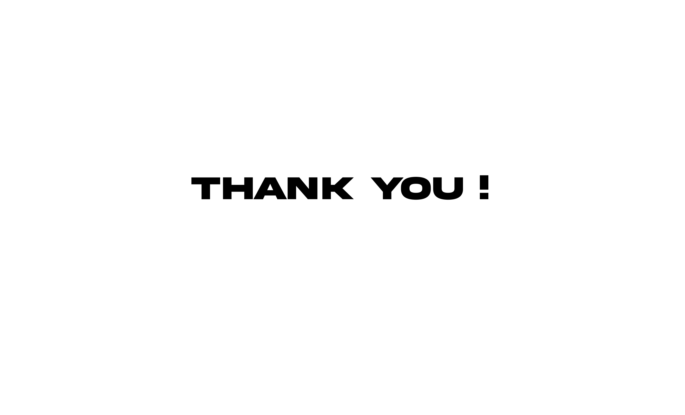

Improving the User Experience in the Add-to-Cart Flow of the Klik Indomaret Xtra Application.
Versi Bahasa IndonesiaProject overview
Product Explanation
Klik Indomaret Xtra is an online shopping application that offers a variety of daily necessities, ranging from food and beverages to health and beauty products. In this case study, I will analyze the Add to Cart process within the application, which is a critical step in the user shopping experience. For this study, I use the Hybrid Double Diamond method combined with Design Thinking, which consists of four stages: Discover, Define, Ideation, and Deliver. The goal is to accelerate solution iterations by ensuring that every design decision is based on user data and real feedback, resulting in better, tested, and user-centric solutions.
Duration
The duration for planning this project is 2 weeks.
My Role
UX Designer, UX Researcher
Discover
In this phase, I conducted direct interviews with Klik Indomaret Xtra app users via Google Meet. The purpose of these interviews was to gain a deeper understanding of the user experience during shopping, particularly regarding the Add-to-Cart flow. Through these interviews, I was able to explore the problems or obstacles users encountered and gain firsthand insights from their perspectives about the process of searching for items, adding items to the cart, and what happens after items are added to the cart.
Interview
Here are the questions I posed to users during the interview:
1. How has your experience been using the Klik Indomaret Xtra app for shopping for daily necessities?
2. How often do you use this app to buy multiple items at once? Do you find the process easy or challenging?
3. How do you usually search for products in this app? Do you prefer using the search feature or browsing through categories? Why?
4. When using the search feature, do the results match your expectations? If not, which aspects do you think need improvement?
5. When adding a product to the cart from the search page, how do you confirm that the item was successfully added?
6. Have you ever felt unsure whether a product was successfully added to the cart after pressing the '+' button? If yes, what made you feel uncertain?
7. What do you think about the experience of adding items directly from the search page? Does this feature make it easier for you, or is there room for improvement?
8. When adding a product to the cart from the search page, how do you confirm that the item was successfully added?
9. If there is missing information, does it affect your decision to add the item to the cart? If yes, how does it impact your shopping experience?
10. What are your thoughts on the placement of the 'Add to Cart' button on the product detail page?
11. When adding products to the cart from the product detail page, does the process run smoothly? Have you ever encountered something unexpected?
12. What are your thoughts on the placement of buttons for increasing, decreasing, or removing items in the cart? Are these buttons easy to find and use?
13. Have you ever accidentally changed the quantity of an item or removed it from the cart? If yes, can you describe when this happened and how you corrected it?
14. How do you feel about the total price displayed in the cart? Does it always match your expectations, or have there been discrepancies that prompted you to double-check?
Observation of Reviews
In this phase, I observed user reviews of the Klik Indomaret Xtra app available on the Google Play Store. These reviews provided valuable data about real-life problems faced by users, which might not always surface through interviews alone. By gathering and analyzing these reviews, I was able to identify common complaints frequently expressed by users. This method complements the interview findings, offering broader insights into user experiences and helping to uncover pain points that might otherwise be overlooked.
Define
After conducting interviews and observing reviews, I proceeded to the Define phase, where the insights gathered from users were organized using an Affinity Diagram. The purpose of this step is to group similar findings and identify patterns in the problems most frequently experienced by users. This phase helps in formulating the key issues that need to be addressed. By clustering related insights, the Affinity Diagram reveals clear themes and priorities, serving as a foundation for designing targeted solutions that address the core challenges faced by users.

From the results of the Affinity Diagram, I identified five main user problems, which include:
1. Lack of stock information: Users hesitate to add items to their cart due to uncertainty about product availability.
2. Insufficient visual feedback after pressing the "+" button: On the search page, users often feel unsure whether an item has been successfully added to the cart.
3. Delete button placement: The delete button is positioned too close to the product in the cart, leading to frequent accidental item removal by users.
Next, I used How Might We to explore as many solutions as possible to address the problems faced by users. Based on the Main User Problems identified in the Define phase, I created the following 3 How Might We questions:
1. How might we ensure that stock information is always accurate and up-to-date?
2. How might we provide clear visual feedback when an item is added to the cart from the search page?
3. How might we redesign the placement of the delete button and quantity controls to prevent users from accidentally removing items from the cart?
Ideation
In the Ideation phase, after identifying the main issues through the Define process, the next step is to generate various creative solutions that focus on improving the user experience. This process involves several steps to test and visualize the generated ideas, with the goal of finding the most effective solution. During this phase, the focus is on brainstorming, sketching, and prototyping potential solutions to address the problems identified in the previous phase. By exploring multiple ideas and refining them, we aim to develop solutions that are both user-centric and feasible to implement.
Here are the steps that will be taken in the Ideation phase:
1. Brainstorming HMW (How Might We).
2. Lo-fi Prototyping & Wireframe.
3. Testing.
Brainstorming HMW (How might We)
How Might We memastikan informasi stok barang selalu terakurat dan up-todate?
How Might We memberikan feedback visual yang jelas saat barang ditambahkan ke keranjang dari halaman pencarian?
How Might We mendesain ulang letak tombol hapus dan kontrol kuantitas agar pengguna tidak secara tidak sengaja menghapus barang di keranjang?
Lo-fi Prototyping & Wireframing
Link Lo-fi Prototyping: Lo-fi Prototyping
Link Wireframe: Wireframe
Testing
In this phase, I conducted moderated testing based on the previously identified "How Might We" questions. The testing process revealed that the implemented solutions effectively addressed all user concerns and questions. The testing outcomes demonstrated that the proposed improvements were well-aligned with user needs, resolving pain points such as stock information accuracy, clear visual feedback, and optimized button placement. This validation confirms that the solutions enhance the overall user experience and meet the goals set in the earlier phases.
Delivery
In the final phase, Delivery, my focus was on refining the results from the previous testing and ensuring that the application provides the best possible experience for users. This was achieved by designing High-Fidelity Prototypes, which represent the final, polished version of the solutions.
Link Hifi: Hifi
Conclusion
I have successfully identified and resolved key user issues, such as unclear stock information, confusing visual feedback, and unfamiliar button layouts. With the designed and tested solutions, the final outcome enhances the user experience in the Add-to-Cart Flow of the Klik Indomaret Xtra application, making it more intuitive and satisfying. These improvements significantly boost user convenience and contribute to a smoother, more enjoyable shopping experience.
